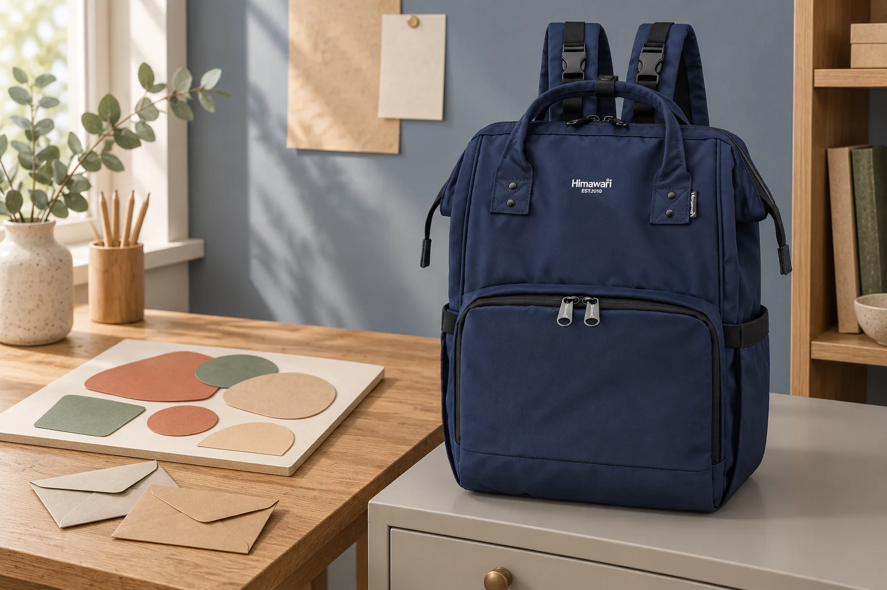

여행 백팩과 기저귀가방, 용도 이름을 읽는 순서

백팩 이름에 여행가방과 기저귀가방, 노트북이 함께 적혀 있으면 어느 용도에 가장 잘 맞는지 궁금해집니다. 이름만으로는 내 물건을 어디에 둘지 알기 어렵습니다. 상품이 소개하는 쓰임을 읽은 뒤 자신의 하루에 필요한 조건으로 다시 나누어볼 수 있습니다. 자신이 필요한 구조를 찾은 뒤 용도 이름과 연결해 읽으면 후보를 비교하기 쉽습니다.
용도명은 제품을 찾아보는 출발점이 될 수 있습니다. 다만 실제로 넣고 꺼낼 물건의 외형과 빈도는 사람마다 다릅니다. 같은 여행에도 기기 한 개와 작은 옷 묶음을 들 수 있고, 기기 없이 큰 자료를 운반할 수도 있습니다. 자신의 일정에서 반드시 이어져야 하는 동작을 먼저 적으면 상품의 여러 이름 중 어떤 정보를 더 읽어야 할지 분명해집니다.
여행용이라는 말에서 확인할 질문
여행에 사용할 생각이라면 가방을 어느 교통수단으로 옮기고 어디에서 열지를 봅니다. 숙소에서 한 번 펼칠 짐과 이동 중 찾을 물건의 자리가 달라야 하는지 생각합니다. 가방 자체의 크기 외에 이용할 교통수단의 현재 반입 조건도 필요합니다. 여행용이라는 상품 표현이 특정 항공사나 보관함에 들어간다는 확인을 대신하지는 않습니다.
같은 백팩을 낮 외출에도 쓸 계획이면 숙소에 덜어낼 묶음을 생각해봅니다. 많은 짐을 한꺼번에 넣는 편의와 적은 소지품을 찾는 편의는 다른 조건입니다. 가방을 비워도 작은 파우치가 잡기 쉬운 자리에 남는지 실제 구조에서 봅니다. 여행 기간의 길이 하나로 크기를 정하기보다 가득 담았을 때와 일부 짐만 남겼을 때의 사용을 각각 비교할 수 있습니다.
Himawari No.1211 제품 정보의 네이비 원본에는 위쪽 손잡이와 앞쪽의 지퍼 주머니 형태가 보입니다. 상품명은 기저귀가방, 여행가방, 노트북 백팩이라는 쓰임을 함께 소개합니다. 현재 외부 크기는 가로 26 × 세로 40 × 폭 17cm로 안내되어 있습니다. 이 이름과 숫자만으로 전용 보관 기능이나 기기 호환을 확인할 수는 없으므로 실제로 필요한 부위의 정보를 찾아야 합니다.

기저귀가방이라는 말에서 확인할 질문
아이와 함께 쓸 가방을 찾는다면 필요한 물건이 손에 어떻게 나와야 하는지 봅니다. 보호자가 가방을 열고 다른 사람이 필요한 묶음을 꺼내는 상황도 있을 수 있습니다. 포켓의 이름보다 입구를 찾기 쉬운지, 자주 쓰는 한 묶음을 통째로 잡을 수 있는지가 중요한 질문이 됩니다. 준비물 목록 자체는 아이의 일정과 실제 사용 기준에 맞춰 정합니다.
상품명에 이 용도가 있다는 사실을 보온이나 방수, 위생 관련 기능으로 넓혀 읽지 않습니다. 그런 설명이 있다면 어느 부위와 어떤 조건에 관한 안내인지 따로 확인합니다. 없는 기능을 기대해 가방을 채우기보다 자신이 필요한 보관품과 가방 구조를 함께 대조합니다.
다른 사람이 함께 가방을 사용할 계획이라면 그 사람이 여는 방향도 생각합니다. 내게 익숙한 위쪽 포켓이 다른 사람에게도 같은 위치로 읽히는지 실제로 짐을 꺼내보게 할 수 있습니다. 가방 전체를 다시 정리할 필요 없이 먼저 필요한 묶음 하나부터 위치를 공유합니다. 이 조건은 가족 외출뿐 아니라 공용 장비를 옮기는 가방에도 적용해 볼 수 있습니다.
노트북이라는 말에서 확인할 질문
기기를 담으려면 화면 인치와 가방의 겉 크기를 비교하는 데서 멈추지 않습니다. 실제 기기와 케이스를 포함한 외형이 어느 입구를 지나갈지 확인해야 합니다. No.1211의 현재 사양에는 별도 노트북 칸의 치수가 제공되어 있지 않습니다. 기기 운반이 선택의 우선 조건이라면 그 칸이 있는지와 입구·내부 정보를 판매처에 물어볼 이유가 있습니다.
기기를 넣지 않는 사람은 현재 운반할 큰 물건을 기준으로 같은 공간을 살펴볼 수 있습니다. 큰 자료나 평소 파우치가 실제로 자연스럽게 놓이는지를 봅니다. 기기를 위한 것으로 보이는 칸이 있더라도 그 구조가 내 물건에 맞는지는 별도 문제입니다. 용도명을 모두 활용하는 것보다 지금 필요한 동작을 편하게 이어가는 쪽으로 후보를 판단할 수 있습니다.
한 제품을 여러 용도로 쓰려면 각 일정에 고정할 물건과 바꿀 물건이 생깁니다. 평일의 업무 묶음을 주말까지 그대로 들고 나갈지 생각합니다. 가방을 자주 비우기 어렵다면 이미 쓰는 파우치 단위로 바꿀 수 있는지 검토할 수 있습니다. 물건을 더 나누기 전에 실제로 바꾸는 일정이 얼마나 있는지 보면 필요 이상의 보관품을 추가하지 않을 수 있습니다.
이름을 가린 뒤에도 남는 선택 이유
후보를 비교할 때 상품명을 잠깐 가리고 사진과 확인된 사양을 봅니다. 어떤 물건이 먼저 들어가야 하고 어느 여밈으로 다시 꺼낼지 설명할 수 있는지 생각합니다. 이름을 가렸을 때 선택 이유가 사라진다면 필요한 정보가 아직 적을 수 있습니다. 반대로 크기와 접근 방식이 맞는다면 다른 용도로 소개된 가방도 일상 후보에 남길 수 있습니다.
문의할 때에는 여행에도 되나요라는 질문에 자신의 짐과 장면을 붙입니다. 닫힌 파일의 크기, 함께 담을 파우치, 자주 여는 장소처럼 실제 조건을 전하면 답을 비교하기 쉽습니다. 받은 답이 같은 모델과 옵션을 기준으로 한 것인지도 확인합니다. 하나의 용도에 관한 답을 다른 일정의 모든 조건까지 확인된 것으로 넓히지 않습니다.
주문할 제품을 정했다면 마지막에는 옵션과 현재 안내를 대조합니다. 마음에 들었던 네이비 본체와 실제로 받는 구성, 치수의 측정 기준을 연결해 읽습니다. 사용 범위가 바뀌는 날에는 오늘의 물건으로 다시 가방을 열어봅니다. 처음 붙은 용도명보다 자신이 실제로 담고 옮길 수 있는 구성이 다음 사용의 기준으로 남습니다.